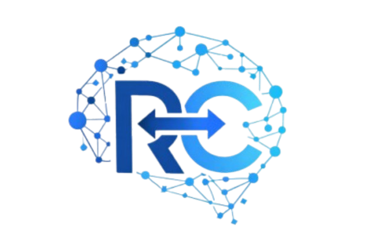

Optimización, automatización e inteligencia artificial diseñada por médicos que conocen el problema desde adentro.
No construimos soluciones desde una oficina. Las construimos desde el servicio de urgencias de instituciones de alta complejidad.
Nuestros fundadores son médicos activos en urgencias. Conocemos los procesos, los cuellos de botella y los costos reales de la ineficiencia operativa.
Combinamos maestrías en inteligencia artificial aplicada, administración de salud, gerencia de organizaciones y estrategia digital de negocios.
No vendemos plantillas. Diagnosticamos el problema real de cada organización y construimos la solución correcta para su contexto específico.
Soluciones tecnológicas diseñadas específicamente para los retos operativos del sector salud.
Diseño e implementación de plataformas robustas adaptadas a los flujos reales de instituciones clínicas y hospitalarias.
Reducimos tareas manuales, errores y tiempos de espera mediante automatización inteligente de flujos clínicos y administrativos.
Modelos y soluciones de IA orientados a mejorar resultados clínicos, optimizar recursos y apoyar la toma de decisiones basada en datos.
Conectamos plataformas existentes (HIS, EHR, sistemas administrativos) para crear un ecosistema unificado y sin silos de información.
Dashboards y reportes en tiempo real para monitorear indicadores clínicos, operativos y financieros con claridad y confiabilidad.
Acompañamiento estratégico post-implementación para asegurar que la solución evolucione con las necesidades de la organización.
Tecnología funcional construida para resolver problemas reales del sector salud.

Sistema integral de referencias y contrarreferencias médicas
Plataforma web especializada en la coordinación y trazabilidad del proceso de referencias médicas entre instituciones de salud. Reduce tiempos de espera y centraliza la comunicación entre equipos clínicos.
ERP y gestión empresarial para organizaciones de salud
Sistema integral de gestión que centraliza cotizaciones, inventarios, cuentas por cobrar, remisiones y reportes operativos en una sola plataforma adaptada al sector salud.
Cada proyecto comienza con una comprensión profunda del problema antes de escribir una sola línea de código.
Analizamos los procesos reales de tu organización, identificamos los cuellos de botella y cuantificamos el impacto clínico y económico del problema.
Construimos la arquitectura de la solución en colaboración con tu equipo, asegurándonos de que responda al flujo real de trabajo y a los usuarios finales.
Desarrollamos e integramos la solución con acompañamiento continuo, asegurando una adopción efectiva por parte de los equipos.
Monitoreamos resultados, medimos indicadores y evolucionamos la solución para que crezca con las necesidades de tu organización.
Koqoi nace de la experiencia directa en urgencias de instituciones de alta complejidad — no de suposiciones sobre el sector salud.
Co-Fundador · Desarrollo & Tecnología
Más de 5 años liderando la optimización de procesos operativos en servicios de salud de alta complejidad. Combina visión clínica, gestión estratégica e inteligencia artificial para crear soluciones que impactan resultados reales.
Co-Fundador · Estrategia & Negocios
Especialista en gerencia de organizaciones de salud y estrategia digital. Aporta una visión profunda de los desafíos operativos y financieros del sector salud, y lidera la estrategia comercial y el desarrollo de nuevas oportunidades de Koqoi.
Cuéntanos el reto que enfrentas. Evaluamos juntos si podemos ayudarte — sin compromiso.
Agendar una ConversaciónCuéntanos brevemente el contexto de tu organización y evaluaremos juntos la mejor forma de acompañarte.
info@koqoi.com
Respuesta en menos de 24 horas hábiles.